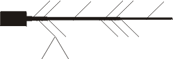
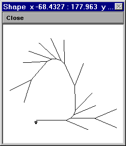
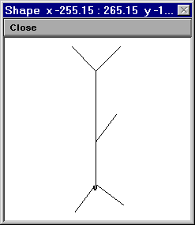
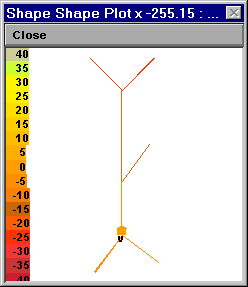

dend[n] { L = aa diam = bb }
This is fine if your model is simple enough,
but Shape Plots of complex models can be indecipherable.
Example: model with a soma and a single primary dendrite that gives rise to several side branches. Each of the short neurites is 10 um long, and the soma and long neurites are all 50 um long.
You can examine the hoc code that implements a stylized specification of this model, or run it yourself, if you like. Here is the resulting Shape plot

Real cells can look much worse.
Example: consider the morphometric data in the following table. The data format is practically identical to one that is actually in use. The principal difference is the presence of a comment field that spells out which measurements belong to which section, so you don't have to try to figure this out for yourself.
Item Definition ---- ---------- n measurement index p index of previous measurement (-1 means no previous) If current position is an origin of a daughter neurite, previous measurement is the termination of the parent neurite. x,y,z,d position and diameter of measurement t type of measurement O origin C continuation B branch point (gives rise to 1 or 2 daughters) T termination comment ap, ba == neurite in apical or basilar field n p x y z d t comment 0 -1 0 0 0 20 O soma(0) 1 0 0 15 0 20 C soma 2 1 0 20 0 3 B soma(1) 3 2 0 20 0 3 O ap[0](0) 4 3 0 120 0 3 B ap[0](1) 5 4 0 120 0 2 O ap[1](0) 6 5 0 320 0 2 B ap[1](1) 7 6 0 320 0 1 O ap[2](0) 8 7 -70 390 0 1 T ap[2](1) 9 6 0 320 0 1 O ap[3](0) 10 9 70 390 0 1 T ap[3](1) 11 4 0 120 0 1 O ap[4](0) 12 11 60 200 0 1 T ap[4](1) 13 0 0 0 0 1 O ba[0](0) 14 13 -60 -80 0 1 T ba[0](1) 15 0 0 0 0 1 O ba[1](0) 16 15 80 -60 0 1 T ba[1](1)The file anat.hoc implements a model based on these data by
forall pt3dclear() to eliminate any pre-existing 3d data
pt3dadd() to enter the individual measurement in this table,
on a section-by-section basis.
pas mechanism into all sections.


Left: Vm at t = 0. Right: Vm at t = 5 ms.
forall for i=0, n3d()-1 if (diam3d(i) == 0) print secname(), i, diam3d(i)
There are many other potential strategies for checking anatomical data, such as
Some of the artifacts that can afflict morphometric data
are discussed in these two papers, which are well worth reading:
Kaspirzhny AV, Gogan P, Horcholle-Bossavit G, Tyc-Dumont S. 2002.
Neuronal morphology data bases: morphological noise and assesment of data quality.
Network: Computation in Neural Systems 13:357-380.
Scorcioni, R., Lazarewicz, M.T., and Ascoli, G.A.
Quantitative morphometry of hippocampal pyramidal cells: differences between
anatomical classes and reconstructing laboratories.
Journal of Comparative Neurology 473:177-193, 2004.
NEURON's Import3D tool can import data in several file formats: SWC, Neurolucida, Eutectic, and MorphML. For an online tutorial about this tool, see http://www.neuron.yale.edu/neuron/static/docs/import3d/main.html.